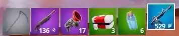
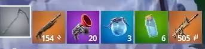

Mejores Spot

Loot Ideal


Cómo Mejorar
1-Practica la construcción rápida: Aprende a construir paredes, rampas y estructuras defensivas con rapidez para protegerte en combate.
2-Mejora tu puntería: Ajusta tu sensibilidad y entrena para ser más preciso, especialmente con armas de largo alcance y escopetas.
3-Controla el terreno: Busca estar en áreas elevadas y usa el terreno a tu favor para tener ventaja en los enfrentamientos.
4-Gestiona bien los recursos: Asegúrate de tener suficiente madera, piedra y metal para construir y enfrentarte a otros jugadores.
5-Juega de forma estratégica: Evalúa cada situación y decide cuándo atacar o cuándo es mejor esperar. La paciencia es clave para sobrevivir más tiempo.
Mapas para training
sasasaasasa